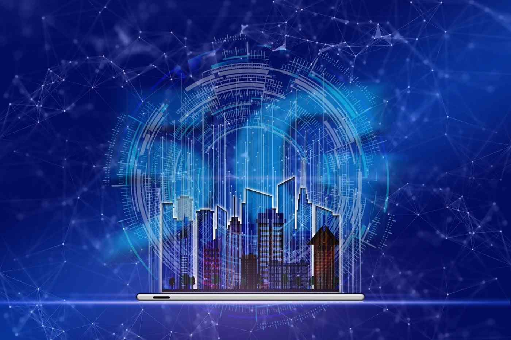

5G is the 5th generation mobile network. It is a new global wireless
standard after 1G, 2G, 3G, and 4G networks. 5G enables a new kind of
network that is designed to connect virtually everyone and everything
together including machines, objects, and devices. 5G wireless
technology is meant to deliver higher multi-Gbps peak data speeds,
ultra low latency, more reliability, massive network capacity,
increased availability, and a more uniform user experience to more
users. Higher performance and improved efficiency empower new user
experiences and connects new industries.
Published the, Sept 16, 2024
By, Ayad Zakaria
Read More

Quantum mechanics emerged as a branch of physics in the early 1900s to
explain nature on the scale of atoms and led to advances such as
transistors, lasers, and magnetic resonance imaging. The idea to merge
quantum mechanics and information theory arose in the 1970s but
garnered little attention until 1982, when physicist Richard Feynman
gave a talk in which he reasoned that computing based on classical
logic could not tractably process calculations describing quantum
phenomena. Computing based on quantum phenomena configured to simulate
other quantum phenomena, however, would not be subject to the same
bottlenecks. Although this application eventually became the field of
quantum simulation, it didn't spark much research activity at the
time.
Published the, Sept 12, 2024
By, Ayad Zakaria
Read More

Cloud computing is one of the main technologies driving the way we
work and play. In addition to helping companies reduce IT headaches,
the cloud also helps boost productivity and boosts your security. It
also helps small businesses leverage the latest in computing
technology for a much lower cost. Here’s what you need to know about
why the cloud matters and how it can help your business.
Published the, Sept 8, 2024
By, Ayad Zakaria
Read More